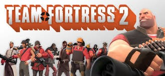
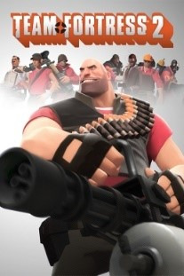
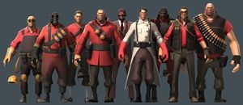

Team Fortress 2
A Team Fortress 2 egy ingyenes, csapat-alapú, többjátékos, FPS videójáték, amelyet a Valve Corporation fejlesztett ki, a Team Fortress Classic folytatásaként. A The Orange Boxban jelent meg 2007. október 10-én Windowsra és Xbox 360-ra, majd egy hónappal később, november 22-én PlayStation 3-ra is kiadták (Xbox 360-on és PlayStation 3-on nem cross platformos játék). 2008-tól kezdve már Steamen lehetett megvásárolni online, vagy boltban a dobozos változatot melyet az Electronic Arts adott ki. 2011. június 24-én teljesen ingyenesé tették a játékot, így mai napig letölthető a Steam játékvásárló platformon.

A Team Fortress 2 fejlesztését John Cook és Robin Walker vezette, akik az eredeti Team Fortresst fejlesztették a Quake-hez 1996-ban. A játékot 1998-ban jelentették be, a Valve GoldSrc motorjára, de a megjelenésig sok mindent megváltoztattak. Például 1999-ben megváltoztatták a játékmenetet, hogy még inkább valósághűbb, háborús kinézet legyen, de ezt hamar lecserélték, így a végleges kiadásnak már képregényes kinézete volt, amit J. C. Leyendecker, Dean Cornwell és Norman Rockwell alkotott meg.

A játék két csapat körül forog, mindkettőben 9 játszható karakter van, akik különböző játékmódokon harcolnak, játékmódoknak megfelelő pályákon.
Az információ hiánya, valamint az, hogy a 6 éves fejlesztés során gyakorlatilag nem tudtak semmit sem a játékról, vaporware-nek nevezték el, és a Wired Newsban írtak egy cikket róla, ahol más, vaporware-nek kinyilvánított játékok is voltak. A játék megjelenésekor sok kritikát, díjat kapott a grafikai stílusáért, kiegyensúlyozott játékmenetért, és a karakterek személyiségéért.
Karakterek:
• Felderítő
• Katona
• Pyro
• Robbantós
• Gépágyús
• Mérnök
• Szanitéc
• Mesterlövész
• Kém

Játékmódok:
Az alap játékmódok: zászlófoglalás, ellenőrző pont foglalás és területi ellenőrzési pontok.
Azonban a frissítéseknek hála sok játékmód (robbanótöltet, aréna, a hegy királya, PASZ ölj és Robbanótöltet verseny) és 2 gyakorló pályát adott a játéknak.
Játékmenet:
Mint az elődei, a Team Fortress 2 is két ellentétes csapaton fókuszált. Ezek a csapatok a RED (Reliable Excavation & Demolition - Megbízható Földmunkák & Bontás) és a BLU (Builders League United - Építők Egyesült Ligája), ez a két cég titokban irányítja a világ összes kormányát. A játékos 9 játszható karakter közül választhat, mindegyik erősségével és gyengéjével. A korábbi Team Fortress kasztjai megtartották a személyiségüket. A játék 6 hivatalos pályával, azonban 13 extra és 8 aréna pályával bővült a későbbi frissítések során. Közösségi pályák is készültek a játékhoz. Amikor a játékos csatlakozik egy szerverhez az első alkalommal, egy bemutató videó jelenik meg a célokról. A körök alatt egy női hang tájékoztatja a játékosokat a főbb eseményekről. A szinkronhang Ellen McLain, aki a Valve többi játékánál is közreműködött (Portal: GLaDOS, Half-Life 2 széria; Overwatch). A hang értesíti a játékosokat hangosbemondón keresztül, hogyha például az ellenséges csapat elfoglalta a foglalási pontot, vagy a robbanótöltettel megközelítjük az utolsó foglalási pontot. A játékoslimit 16 Xbox 360-on és PlayStation 3-on. PC-n, a vanilla szerver 24 játékost tudott fogadni, de egy 2008-as frissítés során ez a szám 32-re emelkedett. Különböző modifikációk 34-re emelték az egyidejűleg egy szerveren lévő játékosok számát.
Háttértörténet:
A Mann család háttér-története a 19. században kezdődik, a gazdag angollal, Zepheniah Mann-nal. Zepheniah Mann a Mann & Sons Munitions Concerns (ismertebb nevén: Mann Co.) cég tulajdonosa volt. Felesége, Bette, 1822. szeptember 2-án szülte meg három fiukat; Redmond Mann-t, Blutarch Mann-t és Grey Mann-t, de a szülés során meghalt. Bár Redmond és Blutarch teljesen egészséges volt, Gray viszont alul-súlyos volt, és még az anyja méhében megtanult folyékonyan beszélni. Zepheniah úgy döntött, hogy meg akarja fojtani, de mikor ezt megtette volna egy sas kiragadta a kezéből, és soha többé nem látta senki. Redmond és Blutarch úgy nőttek fel, hogy nem tudták, van egy harmadik testvérük is.